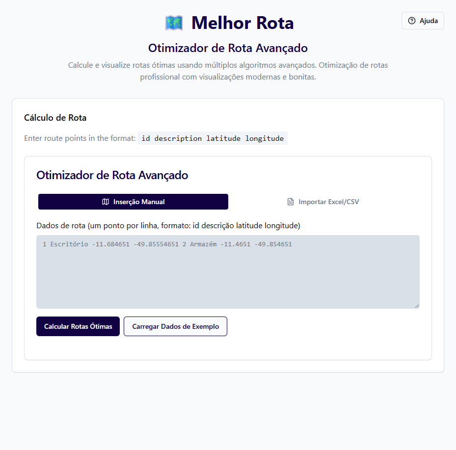
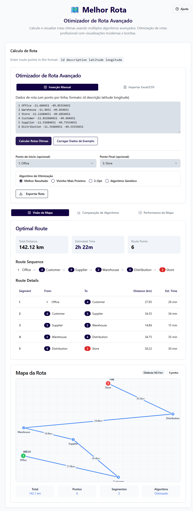

MELHOR ROTA
Sistema Avançado de Otimização de Rotas Operacionais
Transformando Logística em Eficiência
Solução Tecnológica para Gestão Inteligente de Percursos
O Desafio Operacional
Limitações das Ferramentas Convencionais
Máximo de paradas por rota
Em rotas não otimizadas
Pontos ilimitados
- Fiscais de campo precisam visitar dezenas de pontos diariamente
- Ferramentas tradicionais limitam o planejamento a 10 paradas
- Rotas não otimizadas geram desperdício de tempo e recursos
- Ausência de integração com sistemas de gestão existentes
Nossa Solução
Tecnologia Aplicada à Eficiência Operacional
Como Funciona
Processo Simplificado em 4 Etapas
Interface Intuitiva
Tela de Entrada de Dados
- Interface limpa e profissional com foco na produtividade
- Entrada manual ou importação de arquivos corporativos
- Validação automática de dados e coordenadas
Importação de Dados
Integração com Sistemas Existentes

- Suporte para formatos Excel (.xlsx, .xls) e CSV
- Drag & drop para máxima praticidade
- Processamento instantâneo de centenas de linhas
Visualização de Resultados
Mapa Interativo e Métricas Detalhadas
Tecnologia de Otimização
Comparação de Algoritmos Avançados

Valor Gerado
Impacto Direto nos Resultados Operacionais
Economia em combustível e tempo
Mais visitas por dia
De horas para segundos
Benefícios Tangíveis
- Redução de custos operacionais com combustível e manutenção de veículos
- Aumento da capacidade de atendimento com mais visitas por dia
- Melhoria na satisfação da equipe com rotas mais inteligentes
- Dados precisos para análise e tomada de decisão estratégica
- Redução da pegada de carbono através de rotas mais eficientes
Investimento e Retorno
Análise de Custo-Benefício
💰 Estrutura de Custos
Solução web, sem instalação
Plataforma open-source
Servidor cloud escalável
📈 Retorno Estimado
Baseado em redução média de 35% nas distâncias percorridas e aumento de 50% na capacidade de atendimento diário
Diferenciais Competitivos
Por Que Escolher Nossa Solução
Próximos Passos
🌐 melhor-rota-possivel.vercel.app
Inovação em Otimização de Rotas Operacionais